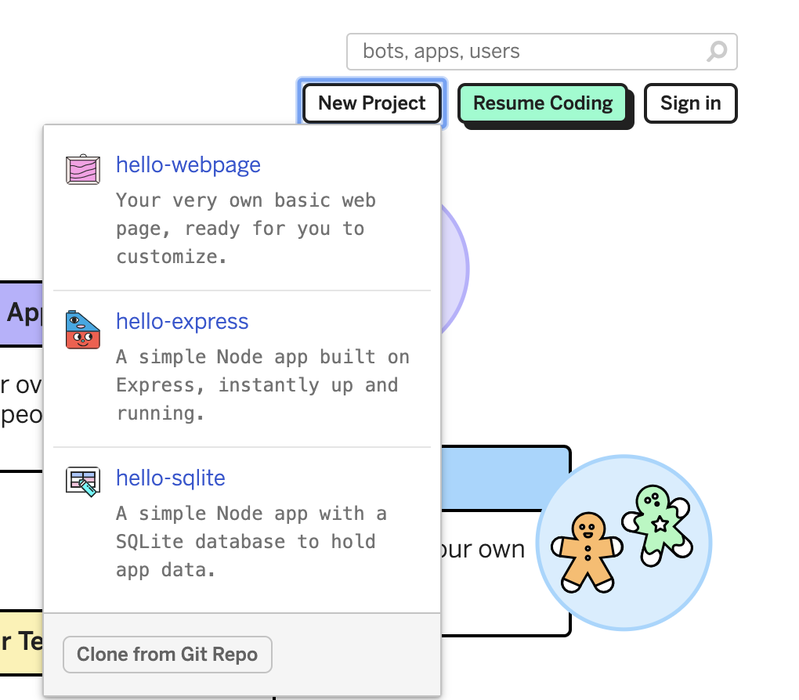

Add structured data to your web pages
Let create a web page
GO to glitch and create a hello-webpage project as shown below.

Where to add the structured data in a web page?
The JSON-LD payload should be inside a <script > element in either the <head> or <body> of the index.html page.
<html>
<head>
...
<script type="application/ld+json">
{
}
</script>
</head>
</html>
Add the scholarly article structured data
<html>
<head>
...
<script type="application/ld+json">
{
"@context":"http://schema.org",
"@id": "https://doi.org/10.1016/j.cell.2015.09.029",
"@type": "ScholarlyArticle",
"author": "http://your/id/here",
"datePublished": "2015-10",
"name": "Reconstruction and Simulation of Neocortical Microcircuitry"
}
</script>
</head>
</html>
Validate the added structured data
Get the web site url as shown in the figure below.
Go to Google structure data testing tool and paste the web page URL as shown below.

0.2.0+35-d43b750c+20191120-0931